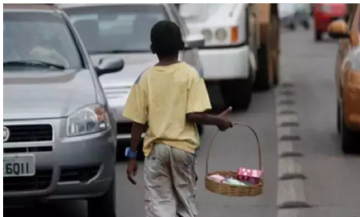

De acordo com o IBGE, em 2023, a região Centro-Oeste teve uma redução de 12 mil crianças e adolescentes em
situação de trabalho infantil, passando de 157 mil para 145 mil:
O trabalho infantil caiu 14,6% em todo o país entre 2022 e 2023.
A região Centro-Oeste teve a menor queda proporcional, em comparação com o Norte, que reduziu 14 mil
crianças e
adolescentes.
A região Centro-Oeste manteve um nível estável de trabalho infantil em relação a 2016.

O levantamento ainda revela que, apesar de possuir o menor número, com média de 4,5%, o Centro-Oeste
registra média de trabalho infantil maior que a média nacional, que é 4,2%. Apenas a região Sudeste (3,3%) e
a Sul (3,8%) tiveram proporções menores.